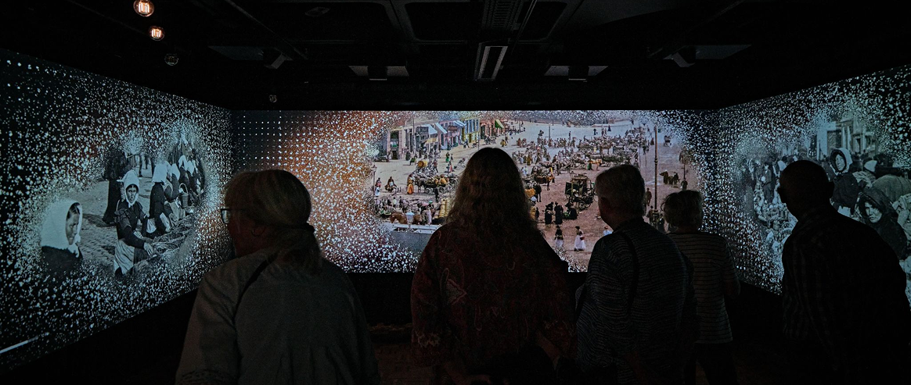
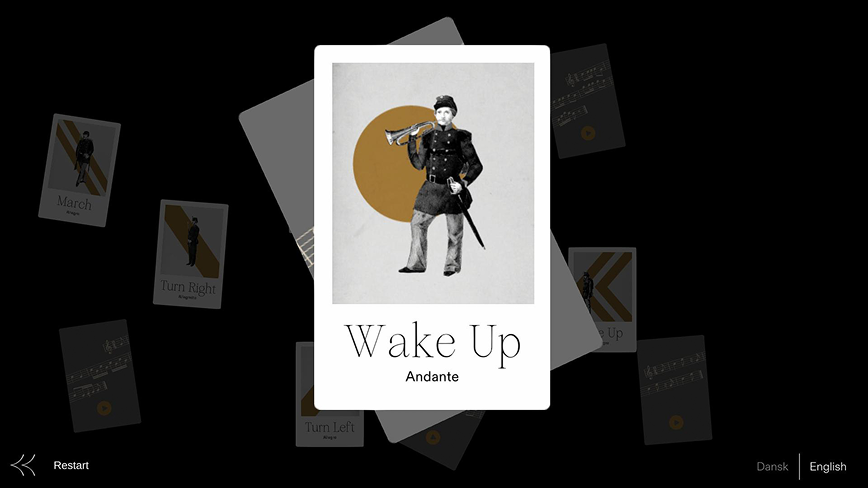
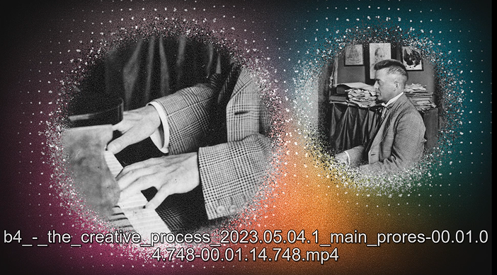
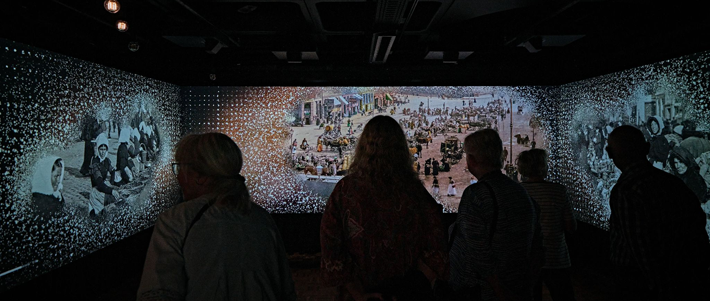
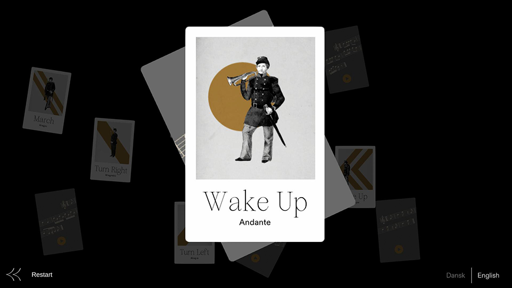
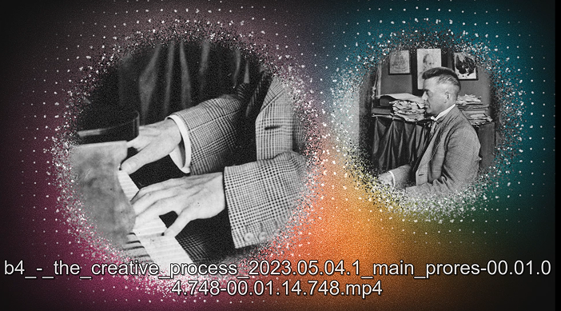

For the interactive part, i was in charge of developing a memory-inspired interactive game in Unity, designed
to evoke the idea of recalling fragments of Carl Nielsen's life and music. Visitors interact with a large
touchscreen to reveal hidden images and sounds, matching elements together to discover stories and
compositions connected to the composer.
This game was designed to be simple, tactile, and intuitive —
encouraging visitors of all ages to explore and play.
A key element of the exhibition was its distinctive visual language, woven throughout the museum. I contributed by producing animated projections (After Effects) and preparing assets optimised for large-scale projection across the different spaces.
The Workers - NG Stories
Role: Deveper, Motion Graphic (Unity, C#, After Effects)
At the Carl
Nielsen Museum in Odense, visitors explore the life and work of the famous Danish composer through a series of
playful, interactive installations. The exhibition blends music, images, and personal stories, inviting
visitors to engage with Nielsen's legacy not just as a historical figure, but as a living presence — to be
discovered, remembered, and reinterpreted through sound and interaction.